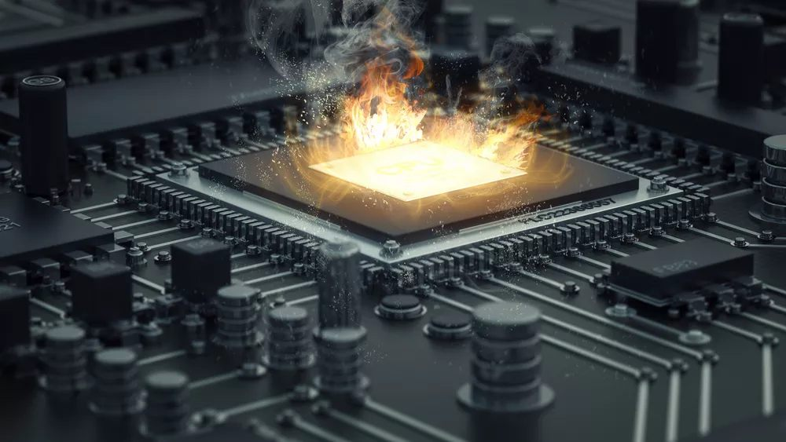

Errores de hardware y orígenes de errores
Un error de hardware es un mal funcionamiento de un componente de hardware en un sistema informático. Los componentes de hardware contienen mecanismos de detección de errores que pueden detectar cuándo existe una condición de error de hardware. Los errores de hardware se pueden clasificar como errores corregidos o como errores no corregidos.
Un error corregido es una condición de error de hardware corregida por el hardware o el firmware en el momento en que se notifica la presencia del sistema operativo sobre la presencia de la condición de error.
Un error no corregido es una condición de error de hardware que el hardware o el firmware no pueden corregir. Los errores no corregidos se clasifican como irrecuperables o no graves.
Un error irrecuperable de hardware es una condición de error irrecuperable o no detenida que el hardware determina que el hardware no puede recuperar. Cuando se produce un error irrecuperable irrecuperable, el sistema operativo genera una comprobación de errores para contener el error.
Un error de hardware nofatal es una condición de error no corregida desde la que el sistema operativo puede intentar la recuperación intentando corregir el error. Si el sistema operativo no puede corregir el error, genera una comprobación de errores para contener el error.
La noción de un origen de error de hardware es un concepto fundamental de la arquitectura de errores de hardware de Windows (WHEA). Un origen de error de hardware es cualquier unidad de hardware que alerte al sistema operativo de la presencia de una condición de error. Entre los ejemplos de orígenes de errores de hardware se incluyen los siguientes:
Excepción de comprobación de la máquina del procesador (por ejemplo, MC#)
Señales de error del conjunto de chips (por ejemplo, SCI, SMI, SERR#, MCERR#)
Informes de errores del bus de E/S (por ejemplo, interrupción del error de puerto raíz pci Express)
Errores de dispositivo de E/S
Un único origen de errores de hardware podría controlar los informes de errores de más de un tipo de condición de error de hardware. Por ejemplo, la excepción de comprobación de la máquina de un procesador normalmente notifica errores de procesador, errores de memoria y caché, y errores de bus del sistema.